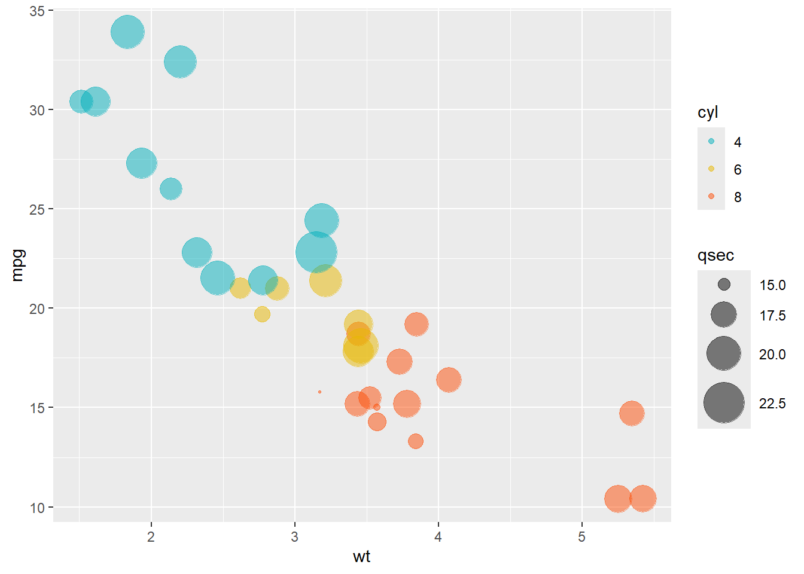

R Markdown을 처음 접하고 “와 멋지다..!” 했었는데 이제는 Quarto 가 나와 Data communication 영역을 평정해버렸다. Quarto의 등장은 기술 블로그, 특히 데이터 사이언스를 업으로 삼고 있는 사람들에게는 큰 축복이 아닐 수 없다. 기록이 중요한 세상에서 손쉽게 데이터 작업의 흔적들을 남기고 포스팅 할 수 있으니 말이다.
포스팅의 의미는 두 가지이다.
하나는 내가 한 작업들을 잊지 않기 위한 포스팅,
두 번째는 다른 사람들에게 보여주기 위한 포스팅
둘 다 중요하지만 사실 첫 번째가 조금 더 중요하다. 기록용이라면 옵시디언이 더 좋지 않나? 라고 생각할 수 있는데 반은 맞고 반은 틀리다. 생각을 정리하고 엮어 나가는데 옵시디언이 가장 좋은 노트앱이이지만 결국엔 내 생각을 누구에게 보여준다는 생각으로 정리하지 않으면 잘 쌓이지 않는다는 단점이 있기 때문이다.
Quarto의 가장 큰 장점은 아래와 같이 R이나 파이썬 또는 그 어떤 코드도 자유롭게 임베딩 할 수 있다는 것.
library(tidyverse)
── Attaching core tidyverse packages ──────────────────────── tidyverse 2.0.0 ──
✔ dplyr 1.1.3 ✔ readr 2.1.4
✔ forcats 1.0.0 ✔ stringr 1.5.0
✔ ggplot2 3.4.4 ✔ tibble 3.2.1
✔ lubridate 1.9.3 ✔ tidyr 1.3.0
✔ purrr 1.0.2
── Conflicts ────────────────────────────────────────── tidyverse_conflicts() ──
✖ dplyr::filter() masks stats::filter()
✖ dplyr::lag() masks stats::lag()
ℹ Use the conflicted package (<http://conflicted.r-lib.org/>) to force all conflicts to become errors
mtcars %>%mutate(cyl =as.factor(cyl)) %>%ggplot(aes(x = wt, y = mpg)) +geom_point(aes(color = cyl, size = qsec), alpha =0.5) +scale_color_manual(values =c("#00AFBB", "#E7B800", "#FC4E07")) +scale_size(range =c(0.5, 12)) # Adjust the range of points size

정말 멋진 세상이 아닐 수 없다.
이 홈페이지도 Quarto webpage 를 참고해서 아주 쉽게 만들 수 있었다. Shiny가 data communication 에 interactive 한 새로운 차원을 열었다면 Quarto 는 디지털 퍼블리싱의 높은 문턱을 한참 아래로 낮춘 혁신이라고 말할 수 있다.
몸 담고 있는 한양대학교 정보사회미디어학과의 슬로건은 “데이터로 세상을 읽고 콘텐츠로 주장하는 지능정보사회의 저널리스트” 이다. 이 슬로건을 실행하기 위해서 앞으로는 R 과 Python과 같은 데이터 사이언스 언어와 분석 역량 뿐만 아니라 Shiny, Quarto와 같은 디지털 문해력을 기를 수 있는 교육이 보완되어야 하겠다.